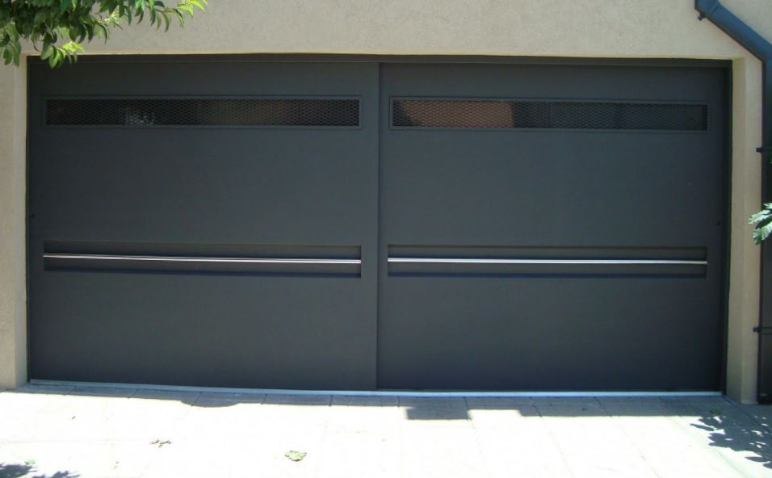

Nuestros Trabajos
En esta sección, te mostramos una selección de nuestros trabajos más recientes y destacados. Cada proyecto refleja nuestro compromiso con la calidad y la atención al detalle en la herrería y carpintería residencial. Navega por nuestra galería para ver una variedad de estructuras metálicas, puertas, ventanas y más. Estamos seguros de que encontrarás inspiración para tu próximo proyecto.
Haz clic en las imágenes para ver más detalles o contacta con nosotros para discutir cómo podemos ayudarte a hacer realidad tus ideas.
